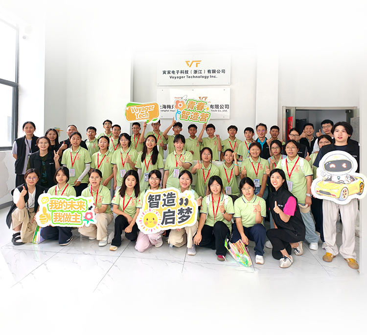
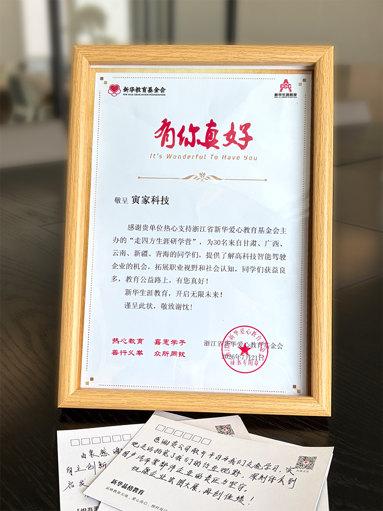
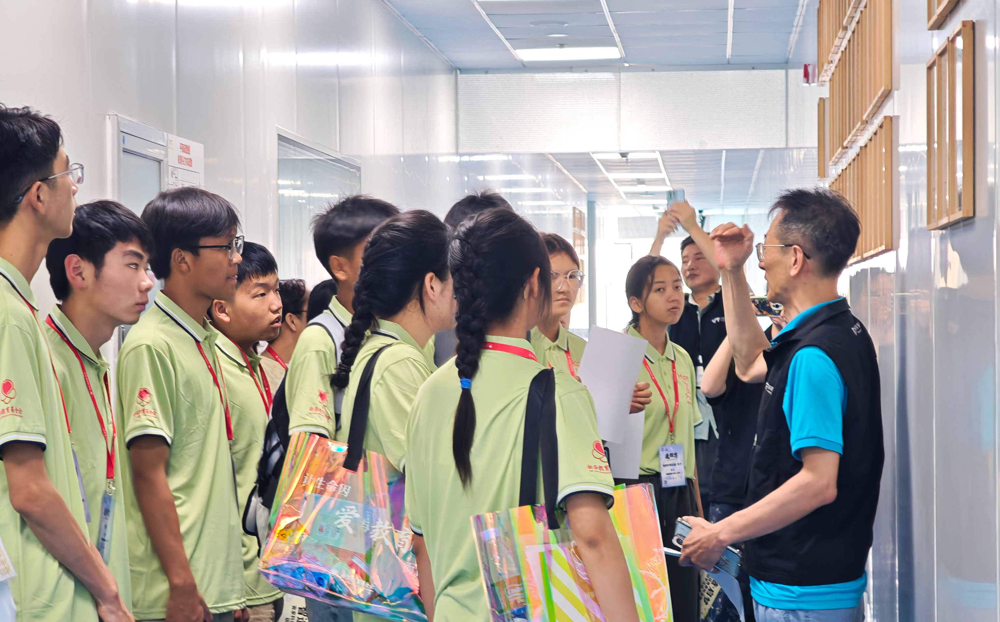
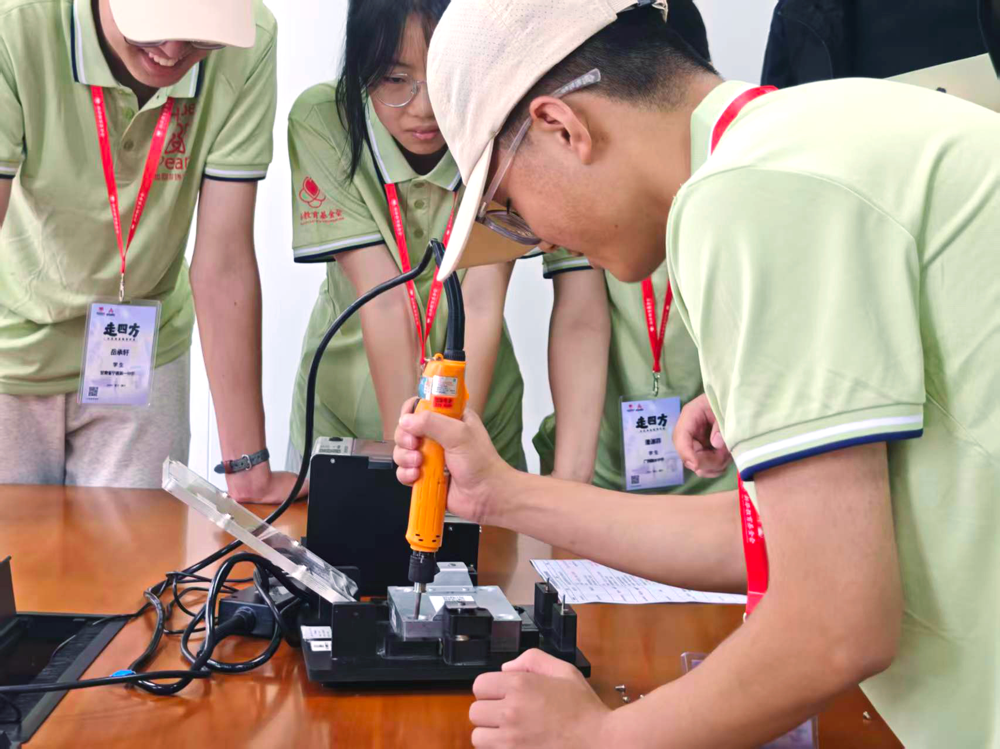
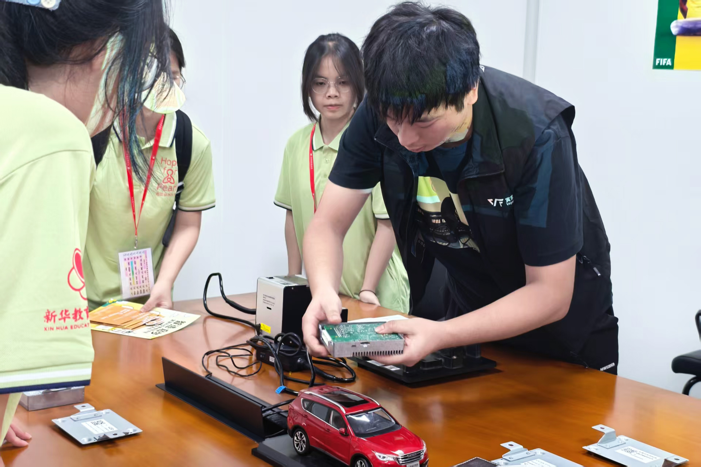
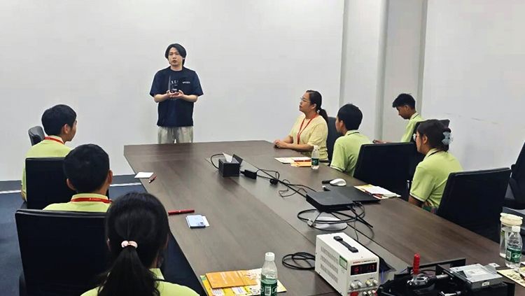
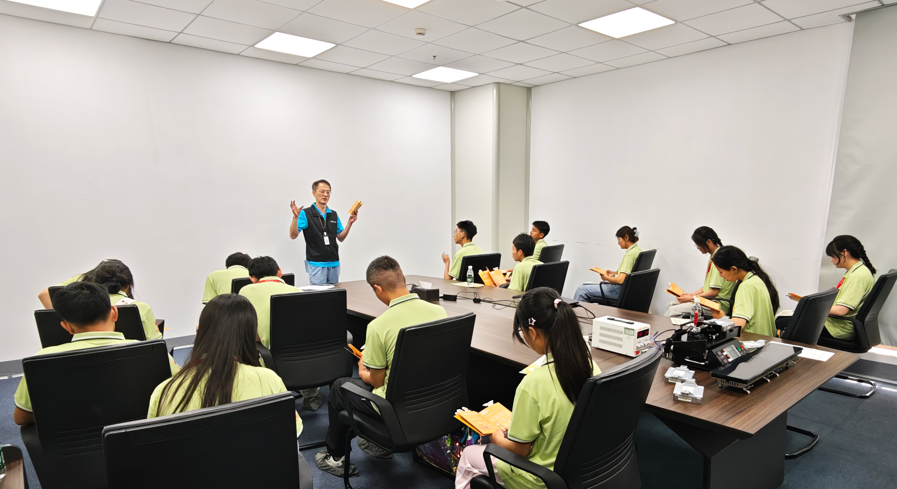
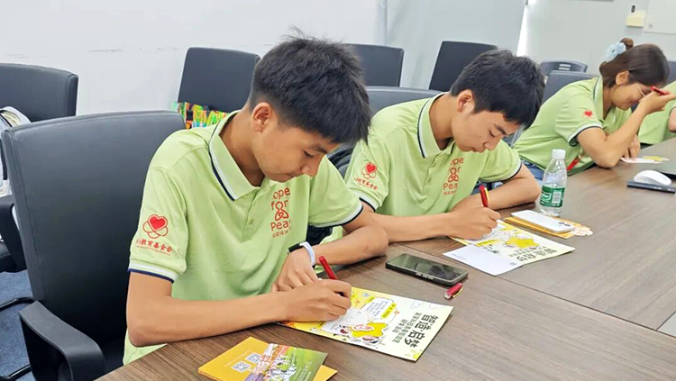
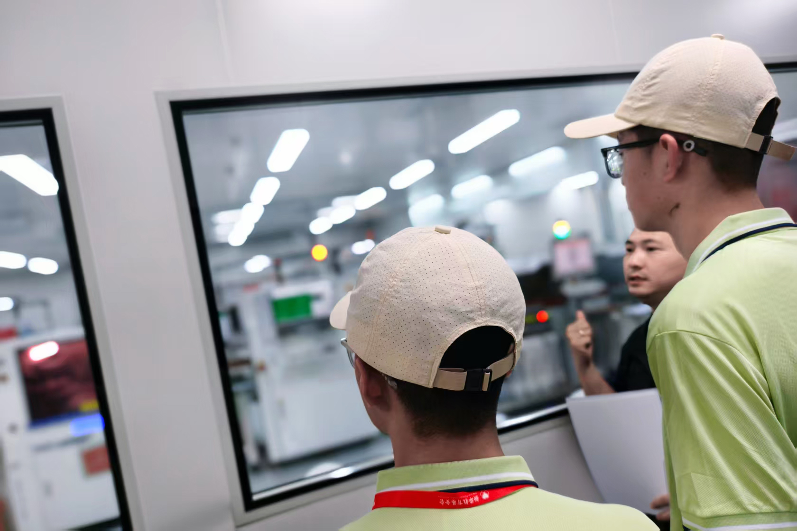

A summer breeze carries dreams onward,
Pearl Students arrive as promised.
July 21
At Voyager Tech's intelligent manufacturing base in Pinghu, Jiaxing,
youthful ambition meets the light of innovation.
Smart mobility moves forward; dreams ignite the future.

Have You Heard of u201CPearl Studentsu201D?
They are outstanding, motivated students from remote and underserved regions.
Like grains of sand inside a shell, shaped by trials, they are tempered into pearls with a unique youthful luster.
Launched by the Zhejiang Xinhua Love Education Foundation in partnership with local governments and education departments, the "Hope for Pearl" Program is committed to opening a window of opportunity for more students. Through academic and living support, character education, career education, and mental-health guidance, it walks alongside Pearl Students through every step of healthy growth, so that no dream is left behind.

Voyager Tech Youth Intelligent Manufacturing CampWhere Innovation Dreams Come Within Reach
On the morning of July 21, the study camp officially began. More than 30 Pearl Students from Qinghai, Gansu, Guangxi, Henan, Xinjiang, and other regions arrived at Voyager Tech's intelligent manufacturing base in Jiaxing.
These high schoolers experienced the charm of innovation up close through the u201CYouth Intelligent Manufacturing Camp Challenge.u201D
Round 1: Patent Treasure Hunt — Feel the Power of Full-Stack Self-Development
In front of Voyager Group's patent wall, a fun challenge kicked off. Team leaders assigned target patents, and students searched through hundreds of patent certificates to find and check in with them. Once the target patent was found, VoyagerTech engineers broke down the technical principles on the spot and explained their real-world applications in detail.
With more than 200 self-owned intellectual-property patents, Voyager Tech's deep commitment to original technology is on full display. The students came to realize that innovation is not out of reach—cutting-edge technology is quietly transforming daily travel and life.

Round 2: I Am an Engineer — Experience Intelligent Manufacturing
The study group entered real production lines and professional laboratories. Vibration testers and temperature-and-humidity chambers were unveiled one by one. Engineers explained the technical logic behind every process, while students tightened screws and connected wiring harnesses with their own hands. Up close, they touched a domain controller and learned how this piece of intelligent hardware acts as the u201Cbrainu201D of a smart car, supporting functions such as intelligent assisted parking to make precise decisions.
Just as a pearl must be polished, every component must go through u201Ca thousand trials and refinements.u201D Only after passing multiple tests can it take on the u201Cgreat responsibilityu201D of real-world application.


Round 3: Igniting DreamsCareer Conversations
The warmest, most heartfelt part of the day arrived. Voyager Tech team leaders became mentors and seniors, sharing their own educational journeys and career-growth stories: some grew steadily from the grassroots up, others boldly crossed boundaries to break through.
VoyagerTech always keeps its doors open to young people who are passionate and eager to grow. These vivid, real-life stories deeply moved the Pearl Students, reminding them that no step in life is wasted. Set your course, move forward steadily, and you will reach the future you dream of.


Round 4: Future Wish Notes — Planting Wishes
As the study journey drew to a close, students picked up pens and recorded their takeaways on wish notes, writing down their hopes for the future.
This encounter planted the seed of an innovation dream in the hearts of these young people. With time and care, one day these wishes will catch the wind and soar into the vast sky.

Voices from the Pearls
Pearl Student No. 1
During this visit to Voyager Tech, I not only saw the advanced technology and precision manufacturing behind automotive instruments with my own eyes, but also deeply felt the tremendous effort and contribution a technology company makes to ensure people's travel safety. During the tour, I was drawn to a series of innovative products the company displayed, such as night-vision cameras, intelligent navigation systems, and sensors that monitor vehicle status in real time. The integration of these technologies not only greatly improves driving safety, but also lays a solid foundation for future intelligent transportation systems. In addition, I deeply felt the close connection between technology and human life: technological progress is not only changing the way we work, but also constantly improving our quality of life.
Pearl Student No. 2
Technological innovation is not just a single piece of R&D; it is made up of many parts that form a unified whole. Behind every seemingly insignificant bit of research are hundreds of scientists working day and night, braving wind and rain, and laboring under starlight. During the visit, I deeply realized that technology is not just a trendy buzzword—it is a force that serves people, takes root in life, and changes the era. It leads the times and shapes the future. It is the major trend of future development and the guarantee of people’s happy lives. Yet at the same time, it demands extraordinary patience, passion, and a spirit of inquiry—repeating experiments that are tedious and monotonous over and over again to innovate and advance. VoyagerTech staff patiently explained cutting-edge technology to us, shared popular science, industry trends, and their own stories, teaching me that following a hot field and following your passion are not mutually exclusive. Their open, heartfelt sharing took me beyond textbooks, broadened my horizons, and let me truly feel the charm of the innovation era and the atmosphere of a technology-driven company. It planted a seed of future imagination in my heart.
VoyagerTech Is More Than a Technology Company — We Want to Be a Warm Companion on the Journey
u201CGreat technology should not live only in laboratories and factories. It should step into the eyes of young people and become curiosity and aspiration.u201D
Voyager Tech focuses on mass-production solutions for intelligent perception, intelligent decision-makingand control technologies, and is committed to the large-scale application of generalintelligent agents across multiple industries.
Yet we know well that what truly carries a company far into the future is not how cool its technology is, but whether there is care for people behind that technology.
This Youth IntelligentManufacturing Camp study activity translated the complex underlying logic of in-vehicle intelligent technology into a unique experience that students could understand and touch.
We believe:
Every pearl deserves to be picked up.
Every dream deserves to be lifted up.
Supporting young people to see technology, approach technology, and become part of technology—that is what Voyager Group is committed to doing for the long term.
